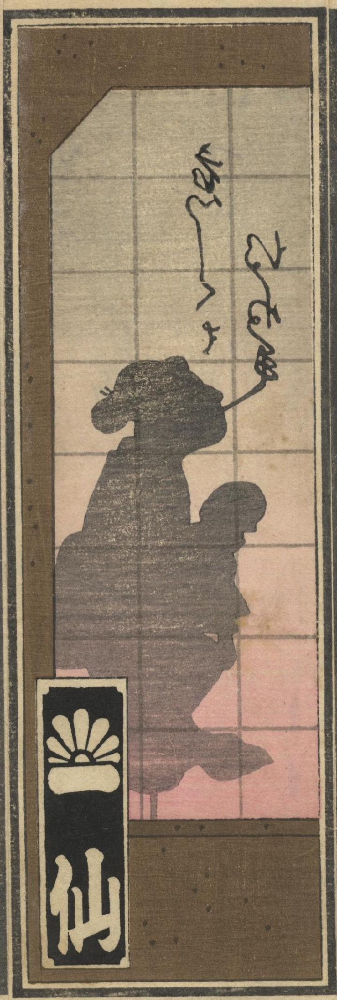

女性の化物の影絵が煙草の煙で文字を書いている。子供を抱いている。
著作者：暁亭／出典：親書誌：U426_nichibunken_0371：東都千社納札大会披露；トウト センジャ ノウサツ オオガイ ヒロウ／日付：2014／資源識別子：U426_nichibunken_0371_0004_0002
Copyright (c)2010- International Research Center for Japanese Studies, Kyoto, Japan. All rights reserved.